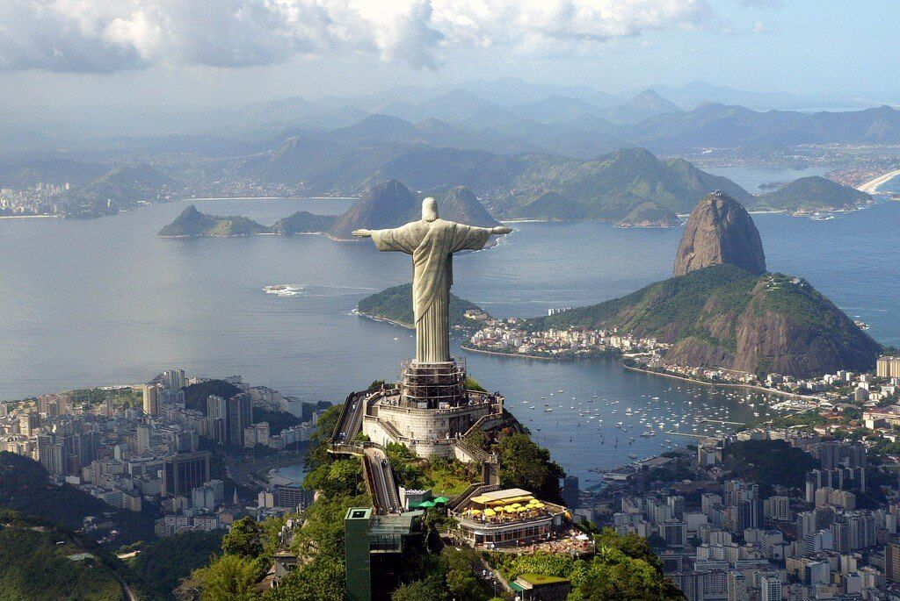
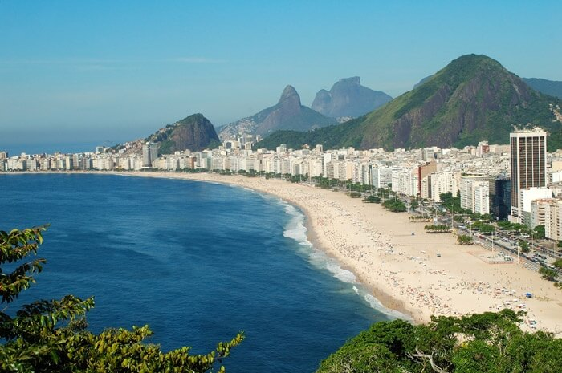
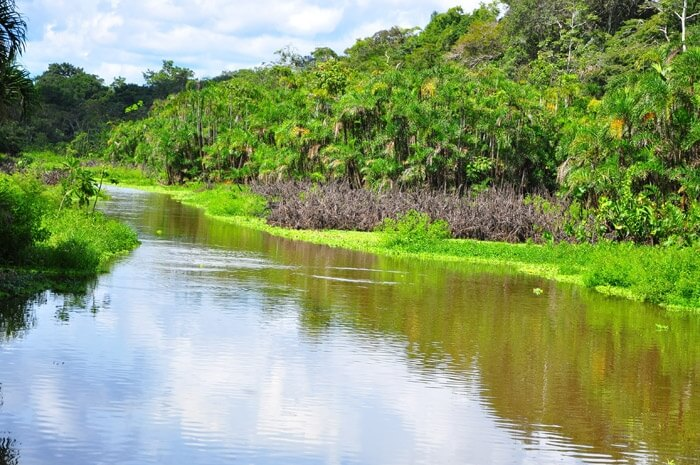
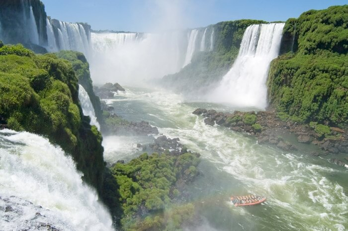
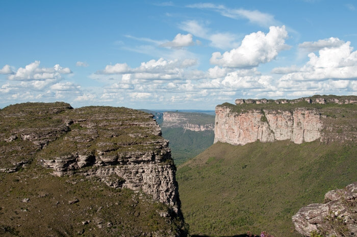
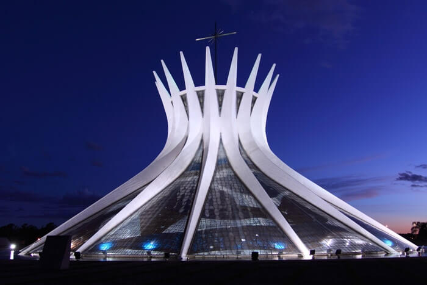

Бразилія
Брази́лія — офіційно Федерати́вна Респу́бліка Брази́лія — держава в Південній Америці, що межує на південному заході з Уругваєм, Аргентиною, Парагваєм і Болівією, на заході з Перу і Колумбією, на півночі з Венесуелою, Гаяною, Суринамом і Французькою Гвіаною, на сході омивається Атлантичним океаном. П'ята у світі країна за площею, що становить 8 511 965 км². Столиця — місто Бразиліа. Офіційною мовою є португальська. Шоста у світі країна за чисельністю населення, що за оцінкою 2018 року становить 210 147 125 осіб.
Статуя Христа Спасителя
Гора Корковаду в Ріо-де-Жанейро символічна для Бразилії і відома статуєю Христа Спасителя заввишки в 38 метрів. До вершини пагорба можна дістатися рейковими шляхами або пішки. Це безперечно те місце, яке ніхто з відпочиваючих в Бразилії не може пропустити! Туристи піднімаються, щоб побачити статую і насолодитися видом міста, який дійсно захоплює дух. Статуя Христа з розпростертими руками виглядає так, як ніби він дає благословення, надихаючи всіх навколо. Це одна з найпопулярніших визначних пам’яток в Бразилії.
Пляж Копакабана в Ріо
Копакабана – 4-кілометровий пляж в Ріо-де-Жанейро, один з найвідоміших пляжів в світі. Пляж – місце, де туристи можуть насолоджуватися приємними канікулами з сонцем і водою, або весело провести час в незліченних пригодах і водних видах спорту. Це місце збирає мільйони людей для щорічного святкування напередодні Нового року, коли влаштовується незабутня вечірка. На двох кінцях пляжу розташовані історичні форти, які тільки збільшують чарівність місця!
Тропічні ліси річки Амазонка
Тропічний ліс Амазонки поширений по декількох країнах, але його найбільша частина знаходиться на території Бразилії – приблизно 60% Джунглів Амазонки. Звичайно, лісом можна захоплюватися завдяки багатьом факторам, різновиди флори і фауни, яка може бути знайдена тільки тут, і особливою чарівністю природи, яка не зруйнована людською рукою. Поширений уздовж річки Амазонки, тропічний ліс забезпечує прекрасні види та можливості для екскурсій і річкових круїзів.
Водоспад Ігуасу
Одна з найвідоміших визначних пам’яток Бразилії – водоспад Ігуасу. Це чудо природи, яке не може бути пропущено. Водоспади розташовані на кордоні між Бразилією і Аргентиною, а їх краса робить їх одним з найвідоміших водоспадів у світі. Підковоподібна форма, висота і потужні потоки води роблять їх місцем, гідним уваги. Мальовничість навколишньої природи, контраст між ясно-синьою громоподібною водою на зеленому тлі змушує спостерігача забути про час і просто поклонитися перед цим творінням природи!
Національний парк Шапада Діамантина
Всі , хто захоплений екологічним туризмом і красивою природою, чули про Національний парк Шапада Діамантина. Це гарне місце, вкрите печерами і дивними гірськими утвореннями, кристалічними водними озерами і недоторканим зеленим лісом, залучає всіх любителів пригод і було оголошено Національним парком в 1980р. Екзотичні рослини і різні різновиди тварин роблять його абсолютно неймовірним і бажаним призначенням для всіх, хто цінує рінноманітність і унікальність природи.
Кафедральний собор Бразилії
Кафедральний собор Бразилії – дивовижна будівля, спроектована Оскаром Німейєр. Собор був готовий в 1970 і став місцем для митрополії Бразилії. Унікальна будівля є символом Бразилії. Споруда дійсно неймовірна, побудована з 16 бетонних стовпів, кожен з яких важить 90 тонн! Дах великого будинку зроблено зі скла, так, щоб був відкритий вид до неба. Статуї та скульптури також змушують відвідувачів затримати дихання. Бразильський Собор безперечно варто відвідати. Це один із найнезвичайніших соборів у світі.
Корисні посилання
- Іспанія
- Франція
- Канада
- Австралія
- Бразилія
- Аргентина
- Італія
- Індія
- ПАР
- Індонезія